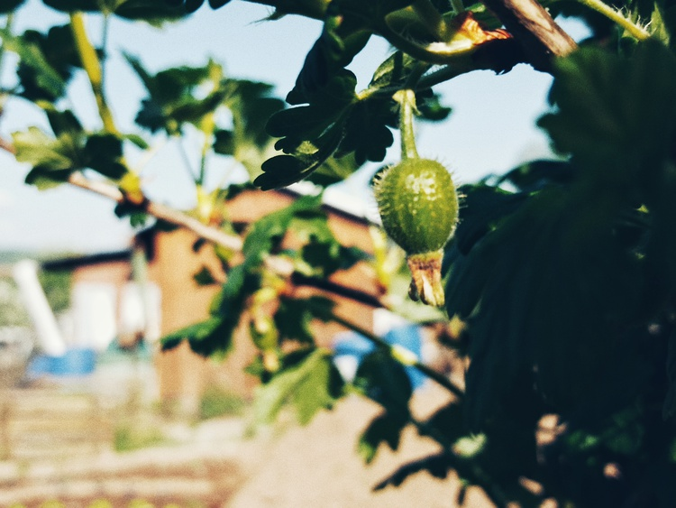
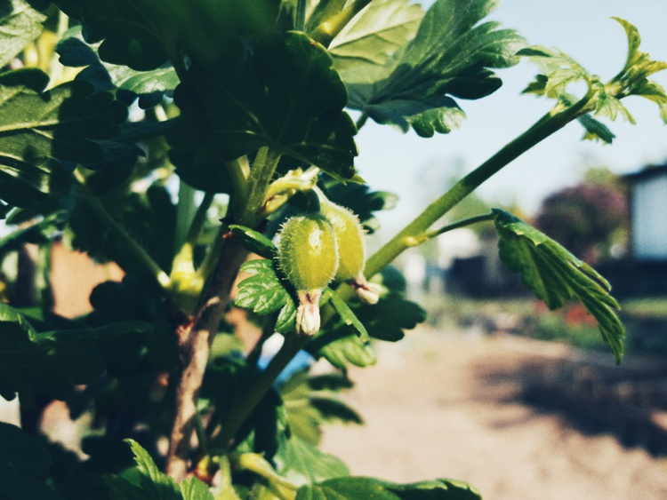

Stachelbeerenansatz
Stachelbeeren—
Das frische Stachelbeer-Hochstämmchen ist voller Früchteansätze, wie man unschwer erkennen kann. Gleiches gilt leider nicht für den rot-fruchtigen Stachelbeerbusch. Der hält sich vornehm zurück und hat noch keinen Blüten- oder Fruchtbehang. Möglicherweise hat der Busch auch den Spätfrost nicht vertragen.


Stachelbeeren am Hochstamm